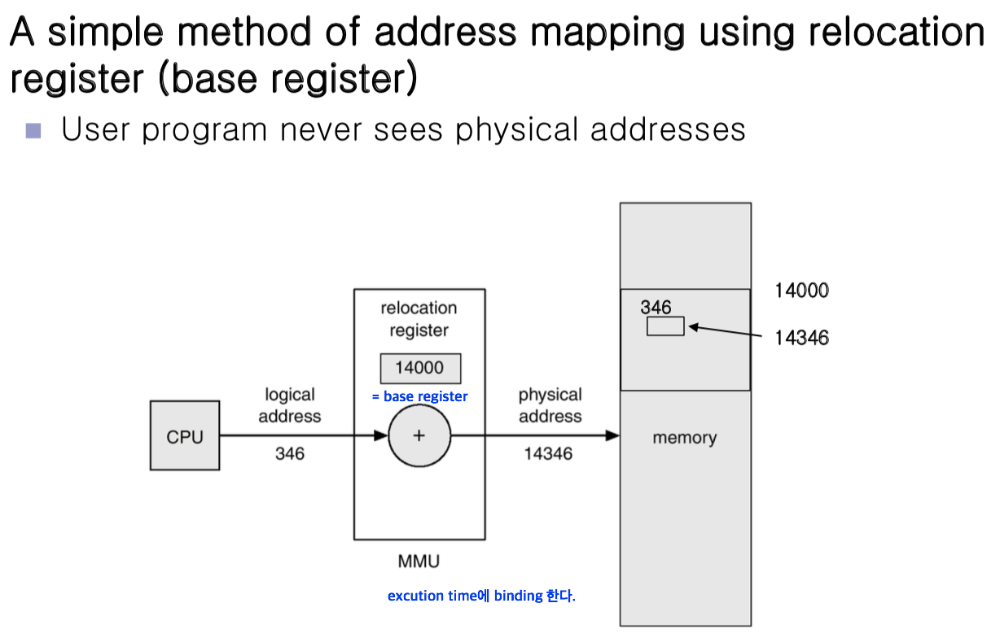
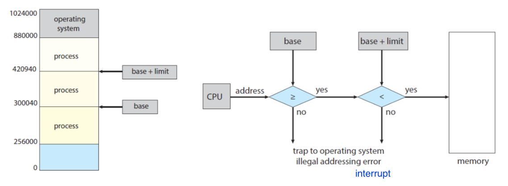
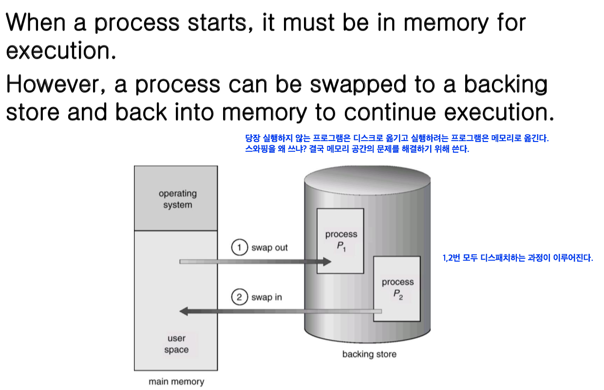
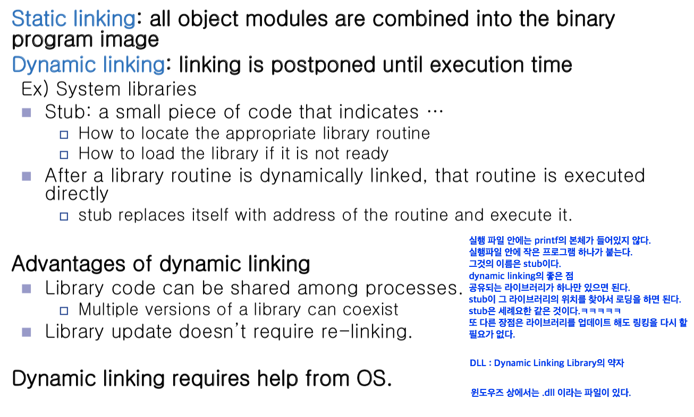

<!doctype html>
<html>
    <head>
        <meta charset="UTF-8">
        <meta name = "viewport" content = "width = device-width, initial-scale=1.0">
        <title>Memory Management</title>
        <link rel="stylesheet" type="text/css" href="../../css/pages.css">
    </head>
</html>

<body>
    <header>
        <h3><a href = "../../index.html">HAGUS <br> HARDWARE</a></h3> 
        <ul id="main_menu">
        </ul>

        <script src = "../../MainMenu.js"></script>
    </header>

    <section class="section">
    <div id = "tag_menu">
    </div>

    <script src = "../../TIL_tag_menu.js"></script>

    <div id = "tag_list">
        <div class="l_title"><a href = "../../TIL.html">Class. </a></div><hr>
        <div class = "l_subtitle"><div class = "title"><a href = "../../TIL.html"><strong>[OS] Memory Management 01 </div><div class="date">2020.05.20</div></strong></a></div>
             <!--content-->
        <div class = "content">
        <br>
<pre>
<span class = "h">Logical address (= virtual address)</span>
  • 각 프로세스마다 독립적으로 가지는 주소 공간
  • 각 프로세스마다 0 번지부터 시작
  • CPU가 보는 주소는 logical address임


<span class = "h">Physical address</span>
  • 메모리에 실제 올라가는 위치


<span class = "h">주소 바인딩</span>
  • 주소를 결정하는 것
  • Symbolic Address -> Logical Address -> Physical address
  (Symbolic Address란 프로그래머 입장에서 숫자로된 주소를 사용하지 않고 심볼로 address를 사용한다.)

  <code>
        <strong>주소 바인딩이 언제 일어나는가? 물리적인 메모리 주소가 결정되는 시점</strong>    

        <strong>1. Compile time binding</strong>
        - 물리적 메모리 주소(physical address)가 컴파일 시 알려짐
        - 시작 위치 변경시 재컴파일
        - 컴파일러는 절대 코드(absolute code) 생성

        <strong>2. Load time binding</strong>
        - 실행이 시작될 때 주소변환이 이루어지는 것
        - Loader의 책임하에 물리적 메모리 주소 부여
        - 컴파일러가 재배치가능코드(relocatable code)를 생성한 경우 가능

        <strong>3. Execution time binding (=Run time binding)</strong>
        - 실행시에 주소가 결정된다는 것은 load time binding과 똑같다 하지만!
        - 수행이 시작된 이후에도 프로세스의 메모리 상 위치를 옮길 수 있음
        - CPU가 주소를 참조할 때마다 binding을 점검 (address mapping table)
        - 하드웨어적인 지원이 필요 (ex. base and limit registers. MMU).
  </code>


<span class ="h">Memory-Management Unit (MMU)</span>
logical address를 physical address로 매핑해 주는 Hardware device

<strong>MMU scheme</strong>
사용자 프로세스가 CPU에서 수행되며 생성해주는 모든 주소 값에 대해 base register(=relocationregister)의 값을 더한다.
간단한 MMU scheme에는 base register와 limit register로 이루어져 있다.  

<strong>user program</strong>
• logical address만을 다룬다. 
• 실제 physical address를 볼 수 없으며 알 필요가 없다. physical address는 요청이 되었을 때 MMU가 주소변환을 해서 얻게되는 개념





<span class ="h">Dynamic Loading</span>
  • 프로세스 전체를 메모리에 미리 다 올리는 것이 아니라 해당 루틴이 불려질 때 메모리에 load하는 것
  • memory utilization의 향상
  • 가끔씩 사용되는 많은 양의 코드의 경우 유용 (예, 오류 처리 루틴)
  • 운영체제의 특별한 지원 없이 프로그램 자체에서 구현 가능 (OS는 라이브러리를 통해 지원 가능)
  • Loading : 메모리로 올리는 것


<span class ="h">Overlays</span>
  • 메모리에 프로세스의 부분 중 실제 필요한 정보만을 올림
  • 프로세스의 크기가 메모리보다 클 때 유용
  • 운영체제의 지원없이 사용자에 의해 구현
  • 작은 공간의 메모리를 사용하던 초창기 시스템에서 수작업으로 프로그래머가 구현("Manual Overlay", 프로그래밍이 매우 복잡)

  * Dynamic Loading과 비슷하지만 이것은 초장기에 사용. 라이브러리가 처리하는 것, 프로그래머가 구현한다는 것이 차이점


<span class ="h">Swapping</span>
프로세스를 일시적으로 메모리에서 backing store로 쫓아내는 것

<strong>Backing store (= swap area)</strong>
디스크이다. (많은 사용자의 프로세스 이미지를 담을 만큼 충분히 빠르고 큰 저장공간)

<strong>Swap in/ Swap out</strong>
  • 일반적으로 중기 스케줄러 (swapper)에 의해 swap out 시킬 프로세스 선정
  • priority-based CPU scheduling algorithm
  -> priority가 낮은 프로세스를 swapped out 시킴
  -> priority가 높은 프로세스를 메모리에 올려놓음
  • Compile time 혹은 load time binding에서는 원래 메모리 위치로 swap in 해야 함
  • Execution time binding에서는 추후 빈 메모리 영역 아무 곳에나 올릴 수 있음
  • swap time은 대부분 transfer time (swap되는 양에 비례하는 시간)임




<span class ="h">Dynamic Linking</span>
Linking을 실행 시간(execution time까지 미루는 기법)

<strong>Static linking</strong>
  • 라이브러리가 프로그램의 실행 파일 코드에 포함됨
  • 실행 파일의 크기가 커짐
  • 동일한 라이브러리를 각각의 프로세스가 메모리에 올리므로 메모리 낭비 (ex. printf 함수의 라이브러리 코드)

<strong>Dynamic linking</strong>
  • 라이브러리가 실행시 연결(link)됨
  • 라이브러리 호출 부분에 라이브러리 루틴의 위치를 찾기 위한 stub이라는 작은 코드를 둠
  • 라이브러리가 이미 메모리에 있으면 그 루틴의 주소로 가고 없으면 디스크에서 읽어옴
  • 운영체제의 도움이 필요




</pre>  
            
        </div>

    </div>

</section>

    
</body>


